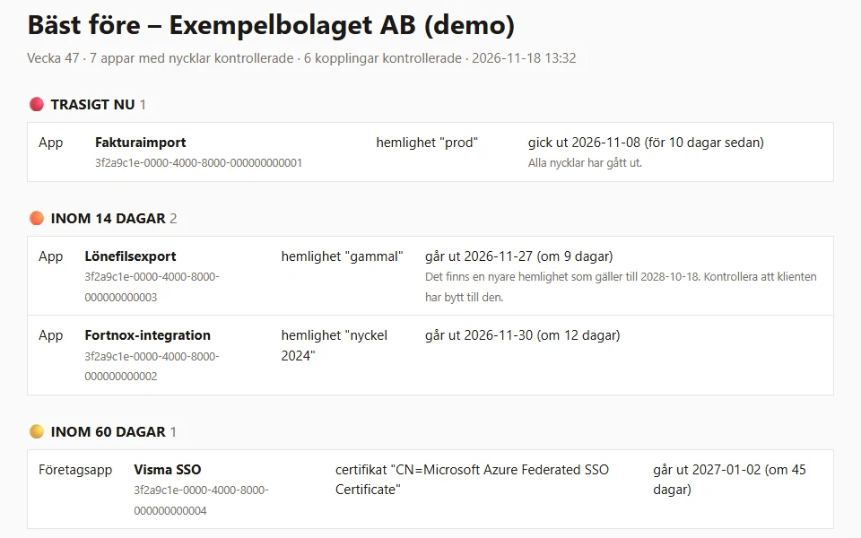
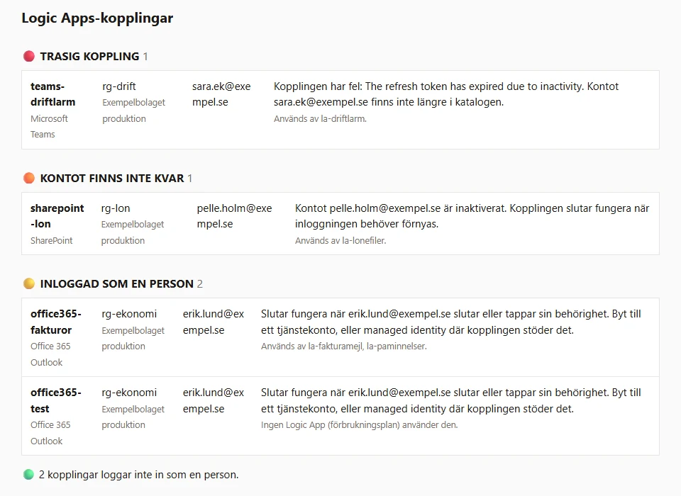

← Alla projektÖppen kod
04 / 06
Bäst före
Visar vad i Microsoft-miljön som snart slutar fungera.
04 / 06
Visar vad i Microsoft-miljön som snart slutar fungera.
När en appnyckel går ut, eller när personen som loggade in en koppling slutar, slutar integrationer att fungera. Ofta utan att någon märker det förrän något har gått sönder.
Bäst före visar vad som är på väg att sluta fungera, medan det fortfarande finns tid att byta.


